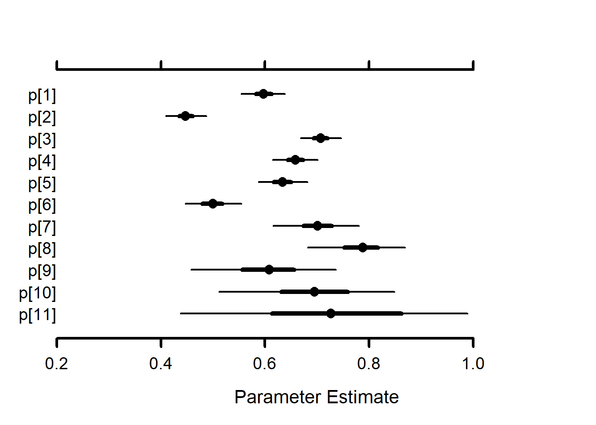

Code
# Following https://oliviergimenez.github.io/bayesian-cr-workshop/worksheets/4_demo.html
#
load('./models/cmrNN_OB/runsOut/tt_NN_OB_mostRecent.RData')
out_NN_OB <- dSimple CJS models to get phi and p estimates to compare with Neural Network CMR models
Probability of survival (phi) model structure:
logit(phi[t,i]) <-
betaInt[ isYOY[i,t],season[t],cohort[i]]
Probability of capture (p) model structure:
logit(p[t,i]) <- betaP[isYOY[i,t],season[t-1],cohort[i]]
Model code is in ./models/cmrNN_OB/modelsmodelCMR_tt_NN_OB_functionsToSource.R
Model is run ‘by hand’ in ./models/cmrNN_OB/modelsmodelCMR_tt_NN_OB_makeFile.R
Not using this: Targets are loaded in R/modelCMR_tt_NN_OB.R and saved as modelCMR_tt_NN_OB_target
Model with phi and p for each age-in-samples (column in the encounter history file)
Model runs:
tt_NN_OB_2023-06-14 23.RData: preliminary run only tracing phi and p tt_NN_OB_2023-06-15 08.RData: tracing phi and p and z [most recent]
# Following https://oliviergimenez.github.io/bayesian-cr-workshop/worksheets/4_demo.html
#
load('./models/cmrNN_OB/runsOut/tt_NN_OB_mostRecent.RData')
out_NN_OB <- d out_NN_OB$modelCode{
delta[1] <- 1
delta[2] <- 0
for (t in 1:(T - 1)) {
phi[t] ~ dunif(0, 1)
gamma[1, 1, t] <- phi[t]
gamma[1, 2, t] <- 1 - phi[t]
gamma[2, 1, t] <- 0
gamma[2, 2, t] <- 1
p[t] ~ dunif(0, 1)
omega[1, 1, t] <- 1 - p[t]
omega[1, 2, t] <- p[t]
omega[2, 1, t] <- 1
omega[2, 2, t] <- 0
}
for (i in 1:N) {
z[i, first[i]] ~ dcat(delta[1:2])
for (j in (first[i] + 1):last[i]) {
z[i, j] ~ dcat(gamma[z[i, j - 1], 1:2, j - 1])
y[i, j] ~ dcat(omega[z[i, j], 1:2, j - 1])
}
}
} priors <- runif(out_NN_OB$runData$nIter * out_NN_OB$runData$nChains, 0, 1)
MCMCtrace(object = out_NN_OB$mcmc,
#ISB = FALSE,
#exact = TRUE,
params = c("phi", "p"),
pdf = FALSE,
priors = priors)


MCMCplot(object = out_NN_OB$mcmc, params = c("phi"))
MCMCplot(object = out_NN_OB$mcmc, params = c("p"))
summary_flow <- MCMCsummary(object = out_NN_OB$mcmc, params = c("phi", "p"), round = 3) %>%
rownames_to_column(var = "var")
summary_flow %>% filter(grepl("phi", var)) var mean sd 2.5% 50% 97.5% Rhat n.eff
1 phi[1] 0.814 0.019 0.778 0.814 0.850 1.01 301
2 phi[2] 0.810 0.022 0.766 0.810 0.855 1.00 186
3 phi[3] 0.750 0.022 0.706 0.749 0.793 1.01 279
4 phi[4] 0.646 0.022 0.604 0.646 0.688 1.00 336
5 phi[5] 0.640 0.025 0.595 0.639 0.691 1.00 382
6 phi[6] 0.692 0.035 0.626 0.691 0.762 1.00 178
7 phi[7] 0.837 0.055 0.735 0.838 0.946 1.02 89
8 phi[8] 0.328 0.032 0.266 0.327 0.394 1.01 348
9 phi[9] 0.668 0.078 0.525 0.664 0.835 1.11 211
10 phi[10] 0.562 0.087 0.414 0.556 0.743 1.01 255
11 phi[11] 0.709 0.151 0.440 0.695 0.981 1.00 94 summary_flow %>% filter(grepl("p", var)) var mean sd 2.5% 50% 97.5% Rhat n.eff
1 phi[1] 0.814 0.019 0.778 0.814 0.850 1.01 301
2 phi[2] 0.810 0.022 0.766 0.810 0.855 1.00 186
3 phi[3] 0.750 0.022 0.706 0.749 0.793 1.01 279
4 phi[4] 0.646 0.022 0.604 0.646 0.688 1.00 336
5 phi[5] 0.640 0.025 0.595 0.639 0.691 1.00 382
6 phi[6] 0.692 0.035 0.626 0.691 0.762 1.00 178
7 phi[7] 0.837 0.055 0.735 0.838 0.946 1.02 89
8 phi[8] 0.328 0.032 0.266 0.327 0.394 1.01 348
9 phi[9] 0.668 0.078 0.525 0.664 0.835 1.11 211
10 phi[10] 0.562 0.087 0.414 0.556 0.743 1.01 255
11 phi[11] 0.709 0.151 0.440 0.695 0.981 1.00 94
12 p[1] 0.597 0.020 0.558 0.596 0.637 1.02 475
13 p[2] 0.448 0.019 0.413 0.448 0.485 1.00 640
14 p[3] 0.706 0.020 0.667 0.706 0.745 1.00 492
15 p[4] 0.658 0.022 0.615 0.659 0.700 1.00 448
16 p[5] 0.634 0.025 0.583 0.635 0.682 1.02 405
17 p[6] 0.500 0.029 0.445 0.500 0.561 1.00 354
18 p[7] 0.692 0.042 0.612 0.693 0.773 1.00 178
19 p[8] 0.784 0.048 0.684 0.787 0.874 1.01 481
20 p[9] 0.609 0.073 0.460 0.612 0.746 1.03 287
21 p[10] 0.695 0.089 0.506 0.699 0.854 1.04 362
22 p[11] 0.716 0.154 0.446 0.721 0.977 1.00 102